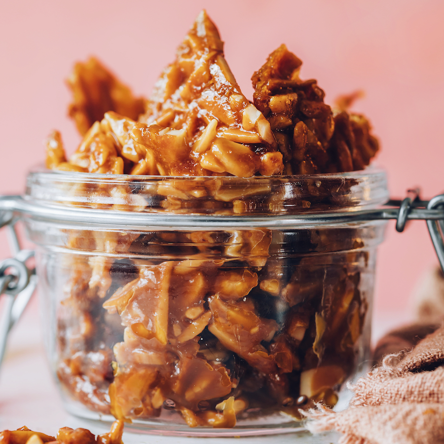

Home
Almond Brittle

Let's make some easy Almond Brittle using only 4 ingredients! What's it like? This is like grown-up peanut brittle but with wholesome almonds, natural sweeteners, and no butter in sight. Plus, no candy thermometer needed (why are those things so scary?) and just 4 ingredients and 30 minutes required! Let us show you how it's done.
What is Brittle?
Brittle is a sweet, crunchy candy studded with nuts, with peanut brittle being the most common type in the United States. It’s usually made by heating water and sugar (often corn syrup) until caramelized, then mixing in nuts, pouring it onto a flat surface, cooling, and cracking the candy into uneven pieces. Many similar treats exist around the world, including croquant in France, kotkoti in Bangladesh, and gozinaki in Georgia.
Ingredients:
- 2 Tbsp coconut oil
- 1/2 cup maple syrup
- 1 ½ cup blanched silvered almonds (alt: any nut or seed)
- 2 Tbsp coconut sugar
- 1 healthy pinch of sea salt (optional but delicious)
Steps:
- Preheat oven to 325 degrees F (162 C) and line a baking sheet with parchment paper, ensuring it covers the entire surface and all the edges (to prevent spillover).
- To a small saucepan, add coconut oil, maple syrup, and coconut sugar. Warm over medium-low heat for 2-3 minutes, stirring occasionally, until there is no visible separation and the coconut sugar has dissolved.
- Remove the pan from the heat and stir in almonds and salt (optional) until evenly coated.
- Pour mixture onto the parchment-lined baking sheet and spread into an even layer with a metal or wooden spoon. Try to get it as even as possible, or the edges will burn and the center won't crisp up as it should.
-
Bake for 15 minutes, then turn the pan around to ensure even browning. Bake 5-10 minutes more and watch carefully to prevent burning. You'll know it's done when it's uniformly golden brown in color and very fragrant. The edges may appear to be getting too brown, but they're just getting crisp and caramelized, so don't be afraid of that! If you don't bake it long enough, it will end up chewy instead of crunchy.
- Let cool completely before breaking into bite-size pieces with a sharp knife or by hand.
- Once completely cooled, store leftovers in a sealed bag or container at room temperature for 1 week or in the freezer for up to 1 month. This makes an excellent holiday dessert or gift!
Source: Minimalist Baker